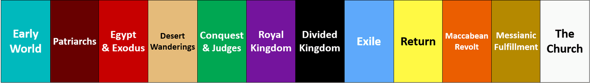
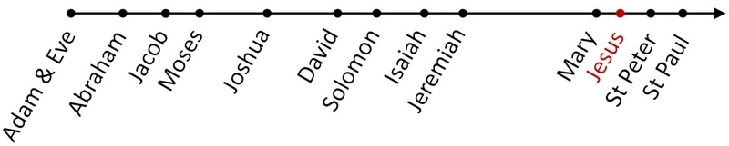

The truth is that many Catholics
long to read the Bible,
but they don't know how.
So they often start and quit.
What if we told you that there is a
'once and for all' solution
to this problem?
It divides the whole Bible into
12 colour-coded Periods,
easy to understand and memorise.

In our course, Mauro will walk you
through each of the 12 Periods.
This way, you will clearly see
how the many characters and events
in Scripture are related to each
other in one unified narrative,
from Adam & Eve to Jesus Christ.

You will grasp
the Big Picture of the Bible
from start to finish,
the Old and New Testament,
...for life!
As a result,
your faith will grow,
your prayer life will improve,
you will be hungry for more!